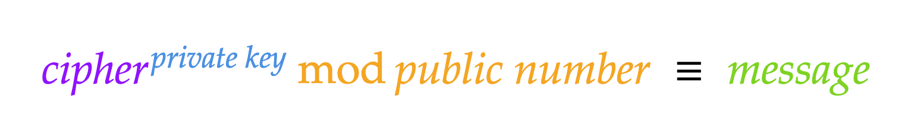
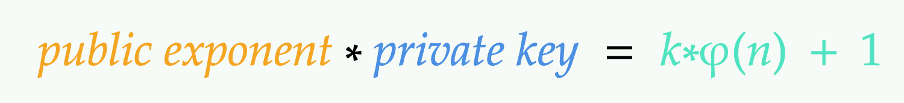
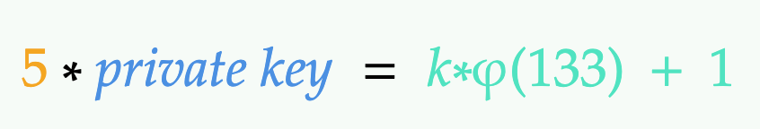
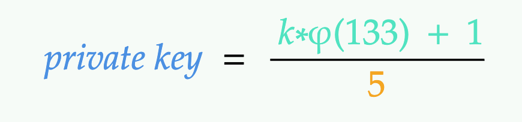

To my utter embarrassment I had to admit that I’ve recently realized I didn’t remember how the RSA worked…. What I though to be RSA turned out to be Diffie-Hellman algorithm… Oops 😬. So, I’ve rewatched Khan’s video about RSA and was surprised I could every confuse the two. This article and another one about Diffie-Hellman is my way of explaining cryptographic notions: visual representation, verbal explanation and… code. Thanks to Python 🐍.

Diffie Hellman key exchange 🗝️ is based on the following mathmetical laws and theorems:
- Modular arithmetics (the one with % sign). It’s also called “clock” arithmetic, I think. You can read about it in wikipedia. May be later I will write some article but not soon, that’s for sure.
- Prime numbers (7, 73 etc). Some might remember Sheldon Cooper from the Big Bang Theory being excited about number 73 (watch here). In short, these numbers can only be divided by 1 and itself. These numbers are still enigmas for the modern scientist and have some peculiar properties so useful for asymmetric cryptography.
- Raising to power. This is pretty simple I think. When we multiply a number by itself many times (for example, 2*2*2), we could rewrite it like this 2^3 and we say “Two to the power three”.
This algorithm is not encrypting anything! It’s used to generate the same key 🗝️ without sending it over the network in order to use symmetric encryption algorithm. So, basically, it’s assymmetric algo for symmetric algo 😳. Why using symmetric encryption at all, if asymmetric is so sweet and safe? Well, it’s also a slowpoke. This is not evident when it’s being used for small data, but it becomes a very big problem for bigger portions.
RSA is based on several mathematical … things:
- Modular exponantiation (as in Diffie Hellman’s algo).
- Prime factorization and Phi. Diffie Hellman does use factorization as well, but doesn’t use Phi of numbers. What’s Phi? We’ll see later on.
- Raising to power (as in Diffie Hellman’s algo).
- Extended Euclidean algorithm (this one is also RSA unique stuff).
It is used to encrypt the message. Only assymetric algo is used, only hardcode hardcore!
Probably because these two guys share some basic principles which they are both relying on, I’ve been confusing them. When I was trying to untangle them from one another, I’ve found it very helpful to write down code while listening the explanation. It’s because when I am practicing I am learning better. Writing code requires full understanding of an algorithm in order to run it. When I thought I’ve got the main idea and started writing code, I’ve realised, that I was wrong…. It was still a long way to go, too many gaps. I also tried to explain it to my husband and it turned out to be even harder. And as the intro to this site states, you don’t understand a subject if you can’t explain it to a 6 year old. Not that mu husband is 6 yo, of course, but that means, I suck even more at understanding this algo. I obvously could not get this to an IT person approximately 30 yo (5 times older than my “debug” readership).
Well, I’ll be trying to explain it as easy as I can and since 6 year old are unlikely to read this article anyway, I’m going to raise the age of my target audience to at least 17-20 year olds (when people might start do some coding). To make it easier to understand and easier to code, I’m going to use very small numbers. I’ll be giving a small coding task along the way in order to keep the reader follow my chain of thoughs as well as to make sure it’s absolutely clear. A good starting analogy for this algorithm was given in the video on Khan academy: while other cryptography algorithms (symmetric ones) use a key both to lock and unlock the “message box”, this one uses a lock 🔒 to encrypt the message and a key 🗝️ to decrypt. What does it mean? I’ll try to explain this using what seems to be a very realistic example.
The Story of Klutzy
Let’s imagine an adminstrator in the Stormgrad’s palace (why not? 😂), an intern going by the name Klutzy 💂, who has lost his keys 🗝️ on duty. These keys were then picked up by a rogue Lunair (a hacker 🥷). Well, may be not “picked” but rather pickpocketed. That can result in a massive damage to the palace 🤑 because this rogue has stolen a decent amount of jewls and gems that can let her prosper for a very long period of time. The ruler of Stormgrad, 🤴 Anduin, was very angry about that, since this money is needed for some important royal 👑 things. Anduin man 🤴 turned out to be a hard nut 🌰 and has given a quest for 3000px to a fellow prist (detective in this case) 🧝♀️, an elf going by the name Targara to help find this dummy and see what the possible damage can be. She is going to use all her powers to dive into the past and unveil the mystery. But she refuses to come to the palace, since she has a baby and none to babysit for now. That’s why they agreed to exchange messages with doves 🕊, a tool, that can be easily sniffed by Klutzy 💂. Klutzy may screw up a lot, but he is not a total dummy. He is going to intercept the messages in order to protect himself from panishment. Targarra 🧝♀️ has overseen this and suggested using locked boxes with messages in them. Anduin would have a lock, which he sends to Targarra. She will write down an update and put the message in a box 🗳 and lock it with the Anduin’s lock 🔒. Keep in mind, that Anduin 🤴 is only sending an open lock🔓. As soon as Targarra 🧝♀️ locks it, even she will not be able to unlock it again since only Anduin has the key 🗝️ for this lock. Everything was good, Anduin sending locks and Targarra locking the messages with them until they have realized, that the guilty party could have (and was apparently doing it for quite a time) opened the box by the means of other tools 🛠.

Besides, the doves got too tired carrying havy shippings. That’s why Targarra came up with another plan, based on the previous one. She suggested using mathmetical locks instead of the real ones. She called it RSA. Oh, poor Klutzy… . Let’s examine his chances of decrypting these messages.
Locking the Message
Targarra 🧝♀️ came up with a series of small numbers that represent some particular message. Why size matters? Well, for this I’ve posted a separete small article here. They have assigned different codes for all the possible outcomes:
- 1 = suspect
- 2 = innocent for sure
- 3 = guilty
- 4 = no new yet
- and every living person in the palace was assigned a number in order to identify them. For example, a message
1 54would mean “Got a suspect, major Ryan.” and3 54would mean “Major Ryan is guilty, bad boy”.
By some means unknow to anyone (sarcasm, since 🛠 is still with him), Klutzy has aquired this cheatsheet of codes. He knows, that his number is 29 and that when he intercepts a message 3 29, he needs to change it to 2 29. Let the game begin!
Anduin and Targarra 🧝♀️ don’t have any keys 🔐 and locks yet. They need to generate them and then may be exchange… (a little spoiler, yes and no). But how are they going to do so over the network which they both suspect to be sniffed by the person responsible for the data breach 💔? Keep in mind Klutzy 💂 covered with sweat 😓 and pigeon poop 💩 from head to toe, sitting in the dovecote 🕊 behind the closet and waiting for the messages from Targarra🧝♀️ to arrive with these dreadful numbers 3 29. He will try to decrypt the messages that are exchanged by Targarra and Anduin or at least determine whether the message contains his name or not.
So, Targarra 🧝♀️ want’s to let Anduin 🤴🏽💼 that there is a new suspect, poor major Ryan with his number 54. She writes down a message 1 54.
Just a note a little off topic. They could have used letters instead of numbers, but they would have to convert them into digits anyway. Any letter, digit or a symbol can be converted into a number (computers, binary and stuff), a message “Nothing yet” would look like this in binary:
01001110 01101111 01110100 01101000 01101001 01101110 01100111 00100000 01111001 01100101 01110100and since data is hard for a human to operate with, this is a nicer hex (16 base integers):0x4e 0x6f 0x74 0x68 0x69 0x6e 0x67 0x20 0x79 0x65 0x74. That’s why “convert” is not a good word for that, since all strings, numbers and characters are already digits for a PC.
Try to write down some code that takes an array of digits (this message as an input) and generates an array of integers secret as an output. Express it in your prefered language, I’ll use my beloved Python 🐍:
message_str = "Nothing yet"
message_int = []
for char in secret_message:
# this piece of code takes each char and converts
# it into its hex ASCII representation,
# so for example 'A' becomes 0x41
message_int.append(ord(char))
# the following line is optional, but useful for this demo
print("The message from Targarra to Anduin is {}".format(message_int))
# I could, por supuesto, write print("The message from Veronica to Anduin is" + str(message_int)), but I won't :) Learning to write safe and easy to read code
At this point Targarra has a message she needs to encrypt. According to this algorithm, Anduin 🤴 now needs to give Targarra 🧝♀️ some open lock 🔓 which only he can unlock later with his key 🗝️ that hopefully neither Klutzy 💂, nor Lunair 🥷 can get their hands to this time with their primeval tools. Targarra 🧝♀️ will use this lock to encrypt (aka close) the message she wants to send.
Step 1. Cragting a Lock
Anduin 🤴 chooses two prime numbers 🧙🧙. Write some piece of code that checks whether two given integers are primes and choose two primes. Below is my python version:
# this code is from https://www.geeksforgeeks.org/python-program-to-check-whether-a-number-is-prime-or-not/
# a simple solution would be to divide a number by all numbers between 2 and the number previous to the one being checked
# but this solution is optimized
def isPrime():
if (n <= 1) :
return False
if (n <= 3) :
return True
# This is checked so that we can skip
# middle five numbers in below loop
if (n % 2 == 0 or n % 3 == 0) :
return False
i = 5
while(i * i <= n) :
if (n % i == 0 or n % (i + 2) == 0) :
return False
i = i + 6
return True
prime1 = 7
prime2 = 19
if isPrime(prime1) && isPrime(prime2):
print("The chosen numbers are both primes. Good choice!")
Then multiply the chosen numbers:
public_number = prime1 * prime2
This is how he gets his public number.
Then, he chooses another prime number 🧙, that is not equal to the previous ones, is odd and doesn’t share any common factors with φ(public number) (read about this in the next section). That’s his public exponent.
These numbers (public number and a public exponent) are going to be Anduin’s 🤴 open lock 🤴🔓, i.e. he’s sending it just like that to Targarra 🧝♀️. Keep in mind that Klutzy 💂 is still there, he is going to make a copy of the lock (two numbers).
How exactly does the lock🔓 look like, mathematically?
This sign ≡ means “congruent”. It’s better to read about modular arithmetics first to get it. But in short, it means that the number from the left can be divided by
modnumber several or many times to get some remainder (some number less than thismodnumber). In this case, 1 is the remainder.
The part of the above formula in orange is Anduin’s mathmetical lock! Everything esle I hope is pretty self-explanatory.
It’s time to introduce our parties in code 🙂. Code three classes and instanciate them: Detective, King and Klutzy.
class Detective:
name = "Targarra"
__prime1 = 7
__prime2 = 19
public_number = __prime1 * __prime2 # 133
public_exponent = 5
class King:
name = "Anduin"
class Liar:
name = "Klutzy"
I’m not bothered with beautiful coding 🦋 and perfect architecture, I’m using this code to show, which information which class has.
Class King has a name Anduin (just to make it more fun), public exponent 5 and a public number 133 and two primes (secret ones) that were used to calculate the public number 133.
Since Anduin’s public_number and public_exponent were sent to Targarra using doves controlled by Klutzy as well, everyone in this play has these public_number and public_exponent. Therefore, classes Detective and Liar also have these properties plus their names hardcoded.
Let’s express it in code as well:
class Detective:
name = "Targarra"
public_exponent = 5
anduins_public_number = 133
class Director:
name = "Anduin"
__prime1 = 7
__prime2 = 19
public_number = __prime1 * __prime2 # 133
public_exponent = 5
class Liar:
name = "Klutzy"
anduins_public_number = 133
public_exponent = 5
Now, since we know the formula and the numbers, we can finally encrypt the message. Let’s edit the Detective class now:
class Detective:
name = "Veronica"
message = []
cipher = []
public_exponent = 5
anduins_public_number = 133
def lock_message(self, public_exponent, anduins_public_number):
for letter in message:
cipher_int.append((letter ** public_exponent) % anduins_public_number)
Step 2. Crafting the Key
Why a lock, but the key? Well, a lock can be any number of the King’s choosing while the key is derived from the lock and is unique for this particular lock. Otherwise, why bother so much with this algorithm and stuff.
This step is private for Anduin. He needs to craft a key 🗝️ to unlock the lock 🔓 so that he could read the messages that are encrypted with his “lock”. So, it should be some operation that let’s him reverse the operation Targarra 🧝♀️ applied to the message using some information he knows but no one else does. What information could that be?
Did you wonder, why we needed to choose two primes first, multiply them and then share the result? And why both of them are marked as private in code above while the derived number is not private? (in Python 🐍, an underscore _ put before an attribute name means private, so when you instanciate the class you can’t get or set the value of these variables directly, but only using some public function of this class).
The answer is that these two primes are needed to craft the key 🗝️. If the attacker gained access to these numbers, he could have crafted the key and decrypted the message. These two prime numbers were used to craft the public key, which is one part of the 🔓 open lock. So, these two primes 🧙♀️ 🧙♀️ are its prime factorisation, i.e. its prime numbers that it can be smoothly divided by.
How would this key 🗝️ look like mathematically? Let’s get back to the lock 🔒 first:
Targarra 🧝♀️ needs to raise her message to the power of Anduin’s 🤴 public exponent and divide the result by his public number many times until she get’s a number less than his public number (mod operation). This is her cipher text ㊙️.
Now, to reverse this operation Anduin 🤴 needs to raise Targarra’s 🧝♀️ cipher text ㊙️ to some power, than divide the result by public number many times until she get’s a number less than his public number (mod operation) to get the original Targarra’s message. This power that Anduin 🤴 needs to raise Targarra’s 🧝♀️ cipher text to should reverse his public exponent’s power. So, for his public exponent and his public number there exists some number, that can undo the encryption. This is the key 🗝️. It’s called private, since it is supposed to be kept secret 🤫. This is how it looks like pseudo-mathmetically:

Now, the problem for the scientists was to find the formula for this private key. In order to understand that algorithm, we going to acquire some important mathmetical prerequisites.
Step 1. Get Phi of the public number.
A phi φ (or totient function) of a number (in this case, of the public number N), also called Euler’s totient function [1] is a number (amount) of positive numbers that are relatively prime to this number (in this case, of the public number N). Relatively prime doesn’t mean, that they may be prime or may be not, who cares. It means that they don’t share with N any common factors i.e. numbers that they can be both divided by without remainder (apart from 1, since any number can be divided by 1). This means, that “phi measures the breakability of a number” [3].
It was not very easy for me to get, but a simple example from the Khan Academy has described it very nicely and clearly [3]. Let’s find a φ(8). We write down all positive numbers (integers) that are less than or equal to 8: 1, 2, 3, 4, 5, 6, 7, 8. Then, we choose those numbers that don’t share common factors with 8. For that we first need to know 8’s factors: 2, 4, 1, 8. Since 1 has finger in a lot of pies 🥧 (all numbers can be divided by 1), we will always count it . Also, it’s obvious that 8 and 8 share common factors since these are the same numbers. So, we are left with 1, 2 and 4.
Now, let’s interrogate 🕵️♀️ each number to find out, whether it has factors 2 or 4 (we are only interested in factors greater than 1)? If no, we increment our counter of relative primes.
1? Always yes. 2 (can be divided by 2)? No. 3 (prime number, 1 and 3 are only factors)? Yes! 👍 4 (can be divided by 2)? No. 5 (prime number, 1 and 5 are only factors)? Yes! 👍 6 (shares common factor 2 with 8)? No. 7 (prime number, 1 and 7 are only factors)? 8? (no comments) No. We have 1, 3, 5 and 7 that do not share any common factors with 8. So, there are 4 such numbers and φ(8) = 4.
Calculating phi is hard for bigger numbers, except one case… . Guess, what case that is! Right (I can’t know what you were thinking about, of course, but I find it reassuring when someone says “You are right”, so, enjoy ☺️). Well, right, this only case is our case i.e. prime numbers.
There are several laws of primes and other mathematical laws as well, that play a crucial part in this matter. Let’s get them one by one.
Property 1. φ(prime number) always equals to prime number - 1. It’s because every integer less than this prime do not share any common factors with it other than 1 and there are prime-1 such integers. Take 7 as an example. There are 6 integers (all) less than 7 that do not share any factors with 7 φ(7) would be 7-1 and equals to 6.
Property 2. φ function is multiplicative. That means that we can get φ of a number if we get φ numbers of its factors. For example, to get φ(8), we could find the product of φ(2) and φ(4) and still get the same result: φ(8) = φ(2) * φ(4).
Now, let’s get back to Anduin’s public number that is composed of two huge prime numbers (not huge in our case, but in real life they are supposed to be very large). We can get φ of this number using the above mentioned mathematical properties and two primes 🧙♀️ 🧙♀️ that Anduin 🤴 has already come up with:
φ(public number) = (7-1) * (19 - 1)
Now, what does all this have to do with the key? φ(public number) is something, that only Anduin can calculate. But how to use it to decrypt the message? Here is where exponentiation comes into play. You can watch about Euler’s theorem on Khan Academy [4]:
Property 3. m ^ φ(n) mod n ≡ 1 . That means if we pick two numbers m and n that don’t share common factors, then raise m to the power of φ(n) and finally divide by n itself many times until we get a number less than n, we will always get 1. For example, take numbers m=5 and n=8:
φ(8) = 4(as we have already found out)5 ^ 4 ≡ 625mod n, i.e. divide bynuntil you get a number less thannleft:625/8/8/8/8/8/8/8....625number78times divided by8gives us1.
They should not share a common factor (m and n). e should not share a common factor with F(n) and should be odd. m and N should not share a factor. So, 3 and 15 or 5 and 15 don’t work.
Property 4. 1 raised to any power is always 1. What is multiplication? Repated addition. So, 7 * 5 means 1^1, 1^7, 1^2132131313 is always 1. That’s why we can modify the formula above to m ^ φ(n)*k ≡ 1 mod n (raising m to the power of φ(n)*k instead of φ(n)) and still get 1.
Property 5. Any number multiplied by 1 equals itself. 1*7=7, 1*9=9, 1*13413421=13413421. If it’s true (and it’s true), then we can modify our equasion once again: m * m ^ (φ(n)*k) ≡ m mod n (adding m to the both sides of it) and still get 1. Don’t fret, we are almost there.
Property 6. The associativity of multiplication. When we multiply the same integers raised to different powers, we can instead get the sum of these powers and then raise this integer to that power. Example: 2^6 * 2^9 = 2 ^ (6 + 9). That’s why we can simplify our equation a bit: m^1*m^(φ(n)*k)≡m mod n = m ^ (k*φ(n) + 1) ≡ m mod n.
Now, if we raise Targarra’s message to the power of k*φ(n) + 1, we get that message back.
So, k*φ(n) + 1 is something that is comprised of public number and private key. 
Looks good. Anduid 🤴 has chosen some public exponent already, it’s 5, and public number is also known, so we can put these values into the formula below:

It’s pretty easy now to get the private key 🗝️ using primitive mathematical laws:

That’s called the trap door [5].
A trapdoor function is a function that is easy to compute in one direction, yet difficult to compute in the opposite direction (finding its inverse) without special information, called the “trapdoor”. Trapdoor functions are widely used in cryptography.
Now, what the hell is k and where did it come from? It’s some coefficient, that’s making this all so difficult. Now, how to find this private key? We don’t know this k coefficient.
For the above equation to work, public exponent * private key product is supposed to be congruent to 1, becase a number can only be equal to itself after exponentiation if and only if it was raised to the power of 1 [7]:
Compute d such that ed ≡ 1 (mod phi) i.e. compute d = (1/e) mod phi = (1/3) mod 20 i.e. find a value for d such that phi divides (ed-1) i.e. find d such that 20 divides 3d-1. Simple testing (d = 1, 2, …) gives d = 7 Check: ed-1 = 3.7 - 1 = 20, which is divisible by phi.
e * d mod φ(n) ≡ 1. So, calculating private key in this case is trivial and comes down to the inversing the modulo, to be precise, modular inverse function. There are different ways to find it, the simplest one (especially in our case of small numbers) is to bruteforce. This method is called naive:
def modinverse_naive(public_exponent, phi_of_public_number):
for i in range(0, phi_of_public_number):
if public_exponent * i % phi_of_public_number == 1:
return i
return -1
Another approach involves quite complex (at least, for me) mathematical calculations using greatest common divisor (gcd) and can be calculated in one line in python using libnum.invmod() function:
import libnum
decryption_key = libnum.invmod(public_exponent,phi_of_public_number)
This is the hardest part, but the key 🗝️ is created and ready to be used and cherished. The most important for Anduin 🤴 at this stage is not to screw up and show it to no one.
References
https://www.youtube.com/watch?v=6KmhCKxFWOs
https://ccom.uprrp.edu/~humberto/very-small-rsa-example.html
https://www.khanacademy.org/computing/computer-science/cryptography/modarithmetic/a/modular-inverses
https://www.geeksforgeeks.org/python-program-for-basic-and-extended-euclidean-algorithms-2/
https://stackoverflow.com/questions/4798654/modular-multiplicative-inverse-function-in-python
[1] [3] About Euler’s totient function (phi)
[2] Khan Academy Crypto course is making a fabulous job explaining RSA, Diffie-Hellman and other crypto stuff.
[4] Khan Academy about Euler’s theorem
[5] Wikipedia, Trapdoor function
[6] When small public exponents are used, things can go wrong.
[7] An article about RSA with a very good simple example.